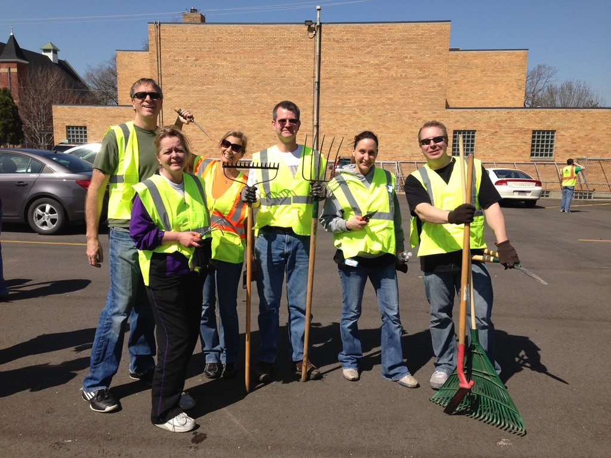

Well House
Ends homelessness with affordable, long-term housing
GiveWebsiteThe estate sale goes to the West Side Community Clean Up we founded, and these are organizations Brian and Erica have supported from the Loft. If this place or these two people meant something to you, a gift to any of them is the best thank-you we can think of.
In 2008, while we were dating, we started picking up trash on our block around Union Square and invited friends to join us. It became an annual spring Saturday with 200+ volunteers, now carried on by the West Grand Neighborhood Organization. Every dollar from our estate sale goes back to it, so the neighborhood that gave us so much keeps getting a little cleaner and a little closer.
Give to the Clean Up
From the first Airbnb booking in 2014, 25 percent of what the Loft earned went to organizations like these. If this place mattered to you, please support one of them: give, volunteer, or just tell a friend.
Ends homelessness with affordable, long-term housing
GiveWebsiteWest Side education, job skills and community support
Give on their siteDrop-in center for youth ages 14 to 24 without stable housing
Give on their siteAdult and family literacy programs across West Michigan
Give on their siteSupport, search help and advocacy for adoptees and families
Give on their siteGrand Rapids community media, where we wrote our first homesharing op-ed
Give on their siteMentoring that keeps young women on a positive path
GiveWebsiteMichigan's oldest nonprofit affordable housing provider, since 1974
Give on their siteAfter-school clubs and programs for Grand Rapids youth
Give on their siteFunding blood cancer research and patient support
Give on their siteSummer camp and year-round programs for kids
GiveWebsiteDisability arts organization behind the DisArt Festival (site to confirm)
Give on their siteConnects with and invests in New American women leaders
Give on their siteDrop-in center and housing for youth facing homelessness
Give on their siteWest Side youth and family ministry
Give on their siteRestorative art and youth education for liberation
GiveWebsiteTrains assistance dogs for people with disabilities
Give on their siteFunds opportunity and support for GRPS students
GiveWebsiteHelps refugees become full participants in West Michigan
Give on their siteCommunity foundation funding Kent County nonprofits
Give on their siteShelter and services for abused women and children
Give on their siteFree and low-cost play-based therapy and workshops
Give on their siteBiomedical research and science education in Grand Rapids
Give on their siteNeighborhood association serving the West Grand area
Give on their siteGrants life-changing wishes for children with critical illnesses
Give on their siteWest Side youth, families and economic support, on Sibley St NW
Give on their siteFree medical care for uninsured West Side neighbors, on Leonard St NW
Give on their siteAfter-school program with daily music classes, on Alpine Ave NW
Give on their siteCommunity school coordinators at Union High and West Side schools
Give on their siteDay center for neighbors experiencing homelessness, moving to Leonard St NW
Emergency food for northwest side families, on Davis Ave NW
Give on their site